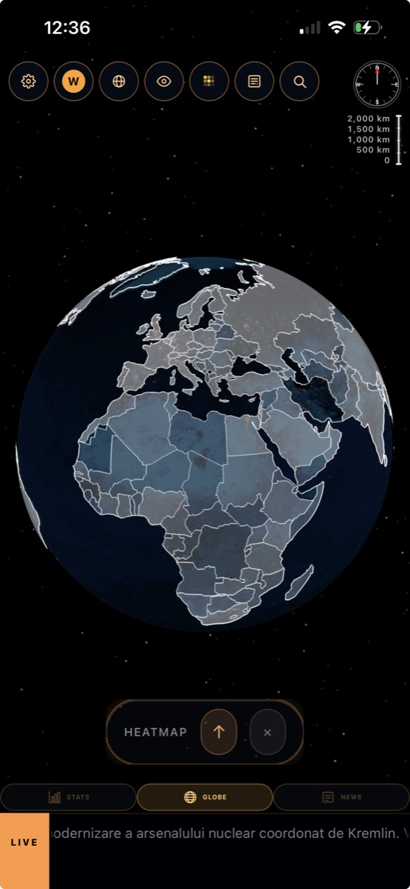
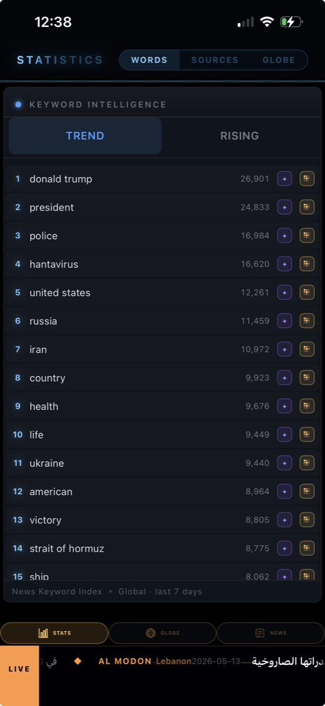
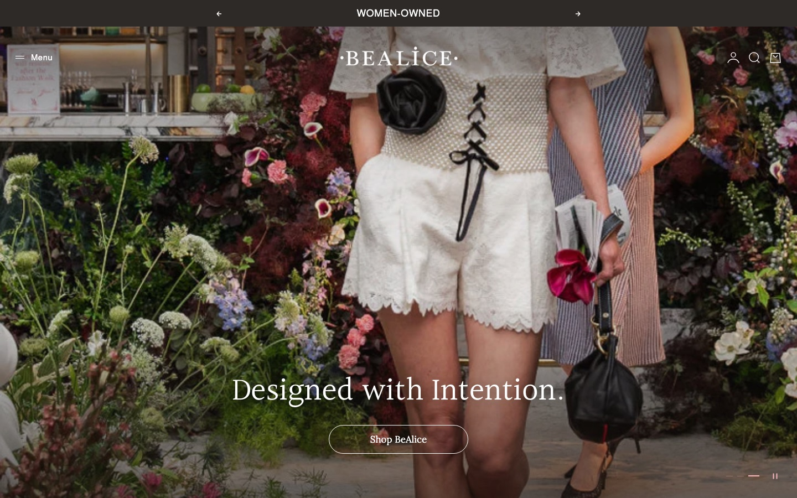
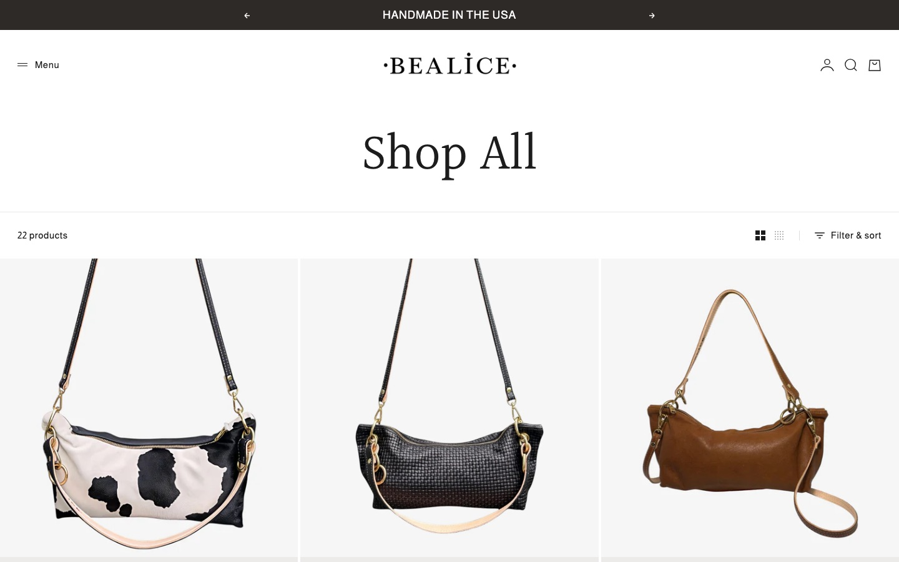
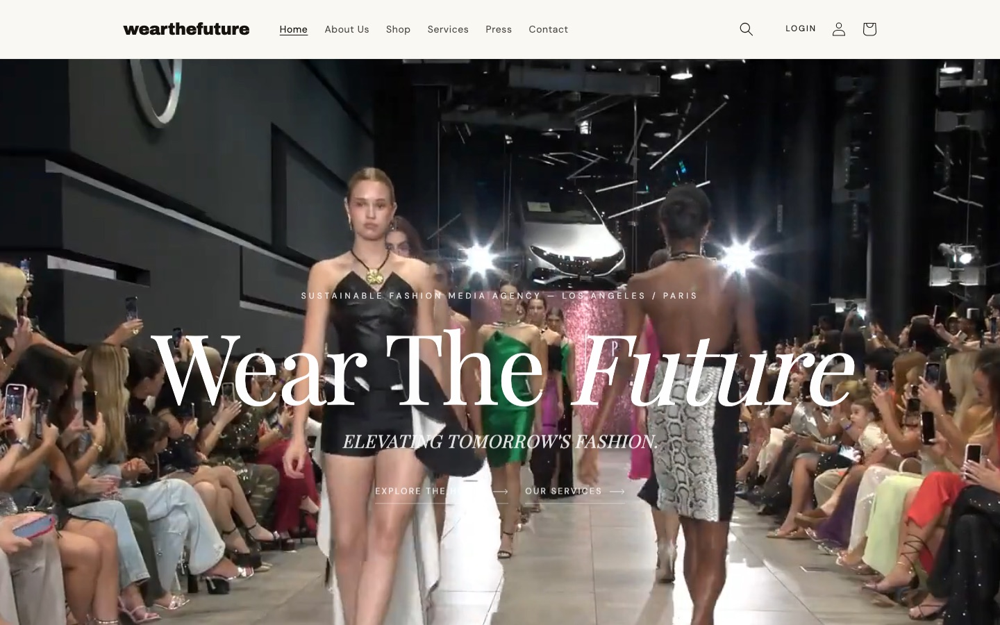
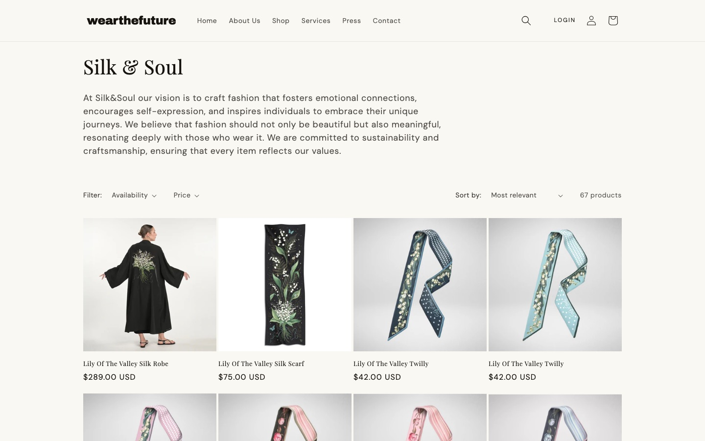

Wesley Harding
I build systems end to end, connecting the physical to the digital — software that keeps track so you don't have to.
Prefer the code? github.com/wesleyharding3
Systems I built and run end to end — the same kind of thing I can build for your business.
Showroom Inventory
A QR code on every garment — so the showroom always knows where each piece is, who has it, and when it's due back.
A real fashion house in Los Angeles runs its day on this. Stylists, editors, and celebrities borrow sample garments to photograph and wear; each piece has a QR code. A staffer scans it with a phone to check it out or back in, and the system records who took it, why, and when it's due back. Nothing gets lost, and anyone on the team can see the truth at a glance.
It runs several brands at once, and each one only ever sees its own pieces — kept separate by the database itself, not by hoping every line of code remembers to ask.
And it isn't just the dashboard: I'm building the showroom an app to go with it, so clients and administrators can reach the business's crucial knowledge anywhere there's internet service.

Fig. 01 — a real collection. The physical inventory the system tracks, piece by piece.
the tag
exact piece
why, due date
permanent history
for everyone
Most of the work is invisible — making sure the system stays correct even when it's busy, shared, and handling money.
Several brands share one system, and each can only ever see its own pieces. That rule lives in the database itself — so a mistake in the code can never leak one client's inventory to another.
Stylists pay a one-time fee to reserve pieces. The payment is confirmed on the server, where the amount can't be tampered with from a browser.
When a borrowed piece shows up in a magazine or on a red carpet, the system ties that coverage back to the exact loan — turning PR into a number a brand can actually see.
A single QR code links the physical garment to its digital record. The same code prints on the binder page and the hanger tag, so the rack and the records never drift apart.
Under the hood — for the technically minded
security definer helper functions (locked search_path to avoid policy recursion) and anti-escalation triggers that block a user from changing their own role, org, or billing flags. Correctness lives in the schema, where it can't be forgotten.tag_id abstracted across qr / nfc / rfid; in-house QR generation, RLS-scoped so a brand can only ever mint its own codes.The dashboard runs the showroom from a desk. The app puts the same crucial business knowledge — where every piece is, what's due back, what the press was worth — in clients' and administrators' hands, anywhere there's internet service.
Fig. 02 — mock screens from the companion app, drawn in code. The real one is in development now.
Working today
- Scan-in / scan-out, with a permanent history of every piece
- Separate views for the owner, each brand, and stylists
- Payments, press-coverage value, and printable binder & hanger tags
Next on the list
- The companion app — the whole business, from a phone
- Automatic reminders when a piece is overdue
- Self-serve onboarding for new stylists
Reads thousands of news stories in dozens of languages and figures out which ones are about the same event.
A side project, and a hard one. If I can untangle the world's news across 48 languages, your inventory and customer data are well within reach.
Fig. 03 — the same city, written three ways, understood as one. That's the whole trick, at scale.
The hard part isn't collecting the news — it's realizing that an article in Mandarin and one in Arabic are the same story, when they don't share a single word.
Under the hood — how it actually works



Fig. 04 — the live app: a 3D globe, a story with where its coverage came from, and the day's trending topics.
Two storefronts, one fashion house
The showroom's own shop — and the handbag label I designed from the ground up.
BEALICE is a high-fashion handbag brand based in Minnesota. I designed the site — the typography, the pacing, the whole feel — and built it on Shopify, so the label runs its own store without a developer on call. bealice.com is live now.
And Wear the Future — the same fashion house whose showroom runs on the inventory system above — has its public face at wear-thefuture.com: a Shopify storefront that turns the showroom's physical collections into a shoppable catalog, brand by brand.
Same discipline, different register: where the inventory system is about correctness, a storefront is about feel — type, imagery, and rhythm doing the selling. I do both ends.




Fig. 05 — stills from both live stores. BEALICE designed end to end; Wear the Future's storefront built as the front of house for the showroom system.
A fast, clean site that represents your business properly and does exactly what you need — not a template a thousand other places already use.
One reliable home for your inventory, customers, orders, or records — so you can actually find things, trust the numbers, and see what's going on.
The connection that reaches into what you physically run — scanning inventory, tracking who has what, automating the busywork that eats your day.
Every project starts with a free conversation and a clear, fixed quote — you'll know what it costs before anything begins.
A report that's wrong loses money the same night.
Before I wrote software, I spent eight-plus years running restaurant and entertainment operations across Los Angeles, Portland, and San Diego — hands-on with the spreadsheets, schedules, and numbers that kept the doors open. That's where I learned to respect real-world systems: a report that's wrong costs you that same night.
So I build the way I'd want a system built for my own business. I'd rather the software itself prevent mistakes than count on everyone to remember the rules. And when something breaks, I find the real cause and fix that — instead of rebuilding from scratch.
AWS Cloud Practitioner certified · CompTIA Data+ · finishing a B.S. in Data Science at WGU.
Let's build something that works.
Tell me what your business needs and I'll tell you how I'd build it. No jargon, no obligation — just a straight answer.